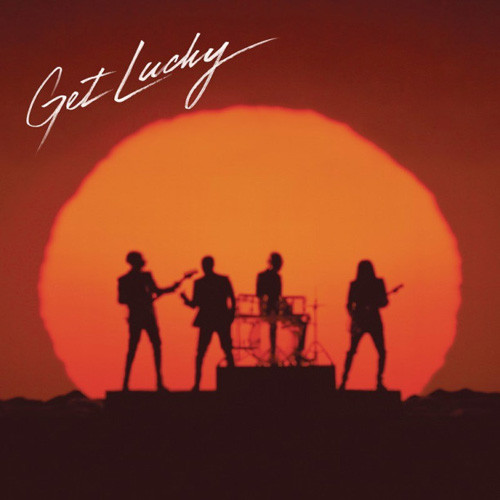

10. “Robot Rock”
Siempre que la gente se queja de la música sampleada, les pregunto: "¿Te gusta 'Robot Rock' de Daft Punk?" Y, por supuesto, dicen que sí, porque es increíble. Y luego les digo: "Bueno, es básicamente un gigantesco sample repetitivo de 'Release the Beast' de Breakwater, y eso no hace que 'Robot Rock' sea menos una canción genial que te encanta". Puedo imaginarme a Daft Punk escuchando esa canción y diciendo: "¡Amigo! Ese ritmo es tan bueno. ¡Reprodúcelo de nuevo!" Por supuesto, lo adornaron con texturas originales, le añadieron voces de robot, conectaron un pedal de guitarra a un Moog y se divirtieron un poco. Es una de las ofertas más repetitivas en el catálogo de canciones de Daft Punk, ¡pero amigo, este ritmo es tan bueno! ¡Reprodúcelo de nuevo!
9. “Technologic”
"Technologic" salió en 2005. Fue el comienzo de una nueva era. La música, los negocios y tu vida social tenían un conjunto completamente nuevo de palabras de vocabulario. Daft Punk dedican estas letras al salvaje y nuevo universo de la creación, colaboración y consumo basados en Internet. Tener estas letras memorizadas es un verdadero testimonio del fanatismo por Daft Punk. La canción se convirtió en un éxito aún mayor cuando Busta Rhymes la sampleó para su canción "Touch It". En el video, vemos nuevamente a los robots borrando las fronteras entre humanos y computadoras. Ese bebé robot es algo absolutamente aterrador.

8. “Crescendolls”
a quinta pista de "Discovery" es pura tensión ascendente, de ahí el título, ¿verdad? La canción repite el ritmo más funky de "Can You Imagine" de Little Anthony and the Imperials y eleva la energía a cinco millones. Es el sonido de confeti de colores del arcoíris en un desfile de cintas. Es una magdalena azucarada estrellada en tu cara, y tienes que saltar arriba y abajo para quitarte el glaseado. Ironicamente, Daft Punk yuxtaponen esta alegría abrumadora con la completa desasociación de los personajes principales en "Interstella 5555", el anime de larga duración que acompaña a la majestuosidad sonora de "Discovery".
7. “Aerodynamic”
¿Puedes decir "el mejor solo de guitarra en la historia de la música electrónica"? Nah, amigo. Uno de los mejores solos de guitarra de todos los tiempos. Esta canción salió en 2001, y estoy bastante seguro de que el mundo nunca había escuchado algo igual. Sé que nos voló la cabeza a mí y a mis amigos. Mi papá decía: "Oye, esto me hace pensar en Eddie Van Halen". Thomas Bangalter señaló que la canción consta de tres partes. La primera es una construcción de funk con un toque áspero, la segunda es un frenesí de un solo de guitarra de heavy metal a doble mano. Ambas se combinan maravillosamente antes de dar paso a la tercera parte, que es "música completamente barroca, una composición clásica que convertimos en forma sintética".
6. “Da Funk”
Volviendo a "Homework" y al fabuloso uso de sonidos callejeros y muestras de la vida nocturna urbana por parte de Daft Punk. Este es el comienzo de la gran historia de amor de Daft Punk con la repetición, las capas y los rugidos sintetizados y funky. Bangalter alguna vez bromeó diciendo que "Da Funk" era el intento de la banda de crear un ritmo de gangsta rap, inspirado en el distorsionado G-Funk de "Regulate" de Warren G. Por supuesto, se mueve mucho más rápido de lo que a los amantes de la hierba de la Costa Oeste les gustaría conducir. No trates de interpretar el video musical. Simplemente disfrútalo tal como es.
El mayor éxito y primer sencillo de "Random Access Memories", "Get Lucky", representa el momento de cierre de ciclo en la carrera de Daft Punk. Habían pasado dos décadas recortando, cortando y reorganizando grabaciones de música disco y soul de los años 70 y 80. De repente, se alejan de las computadoras y comienzan a grabar ritmos de soul y funk por sí mismos, ¡y vaya sorpresa, lo hacen con Nile Rodgers de Chic! Aquí, Daft Punk demuestra que pueden interpretar estas influencias en composiciones completamente originales utilizando el equipo analógico de su juventud. Fue un gran cambio con respecto a los sonidos fuertemente electrónicos de trabajos anteriores, y algunos fanáticos se sintieron alienados, pero hablando históricamente, Daft Punk ha sido todo menos predecible o a la moda.
No podría existir una canción de amor adolescente mejor escrita. Es la canción perfecta para cada amor que alguna vez hayas tenido miedo de comenzar. La muestra es "I Love You More" de George Duke. La letra fue escrita por DJ Sneak y interpretada por Daft Punk. El puente fue grabado en un piano Wurlitzer, el mismo que le dio a Supertramp su sonido característico, y el solo no se tocó en guitarras, sino mezclando los efectos de secuenciadores de música. En conjunto, se convierte en una de las canciones más dulces y románticas de las últimas décadas.
La icónica coreografía y cinematografía de Michel Gondry ayudaron a lanzar la pegajosa melodía a la... espera un momento... popularidad mundial. También marca el inicio de la propia obsesión del cineasta con la repetición y las partes en movimiento superpuestas. Puedes ver estos temas nuevamente en videos posteriores que dirige para The Chemical Brothers y Kylie Minogue. En 1997, "Around The World" fue un cambio de juego, y en 2017, todavía lo será. Es bastante simple, pero se construye de manera hermosa. Podrías escuchar esta canción y enfocarte en un elemento sónico diferente cada vez y disfrutar de una cantidad interminable de diversión. Para un audiófilo, hay mucho que descubrir y disfrutar en su interior.
Toonami en Cartoon Network. A medida que envejezco, se vuelve cada vez más relevante en mi vida. Esa voz de robot realmente sabe lo que está pasando. Este es un auténtico himno generacional, por eso A-Trak intentó convencer a Kanye West de que no lo sampleara. Era "demasiado pronto", o eso pensaba, pero finalmente se demostró equivocado cuando "Stronger" de West se convirtió en un gran éxito. Aun así, sigo prefiriendo el original. Su naturaleza colorida y juguetona ilumina cualquier momento, y ese sample asombroso de vocoder convertido en guitarra es simplemente genial en su máxima expresión.
Daft Punk escribió el himno de fiesta más grande de todos los tiempos. Puedes actuar como en "Revolution 909", detener la música y volver a casa. ¡Nah, solo bromeo, celebremos y bailemos tan libres una vez más! En serio, cuando me muera, pongan esta canción en mi funeral. Esta brillante y atemporal obra maestra fue escrita en 1998, y Daft Punk la mantuvo guardada durante dos años porque son genios locos que querían asegurarse de que sonara bien dos años después. Felicidades, chicos. "One More Time" sonará genial en 2098, 3098, lo que sea. Esta canción es increíble. ¿Qué otra canción tiene un descanso lento de un minuto y medio que los DJ realmente reproducirán en su totalidad? Ninguna. Eso es una locura, y aún así, mezclar fuera del opus de Daft Punk sin permitir su resolución completa es pura blasfemia. Cuando salió esta canción, la gente criticó su uso del vocoder, pero nada pudo detener su ascenso meteórico en las listas. Solo demuestra que si alguien no comprende tu genialidad al principio, sigue adelante. Eventualmente, lo harán.